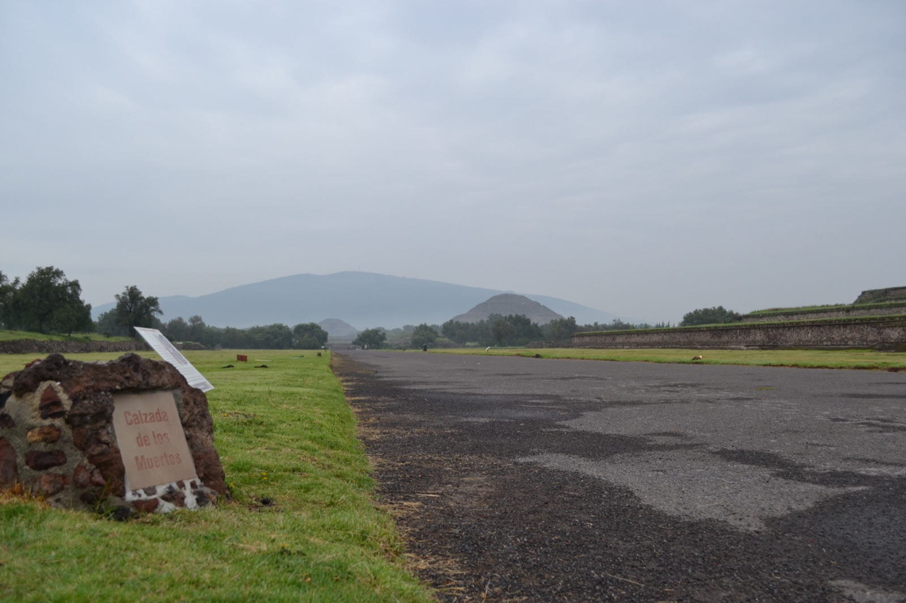
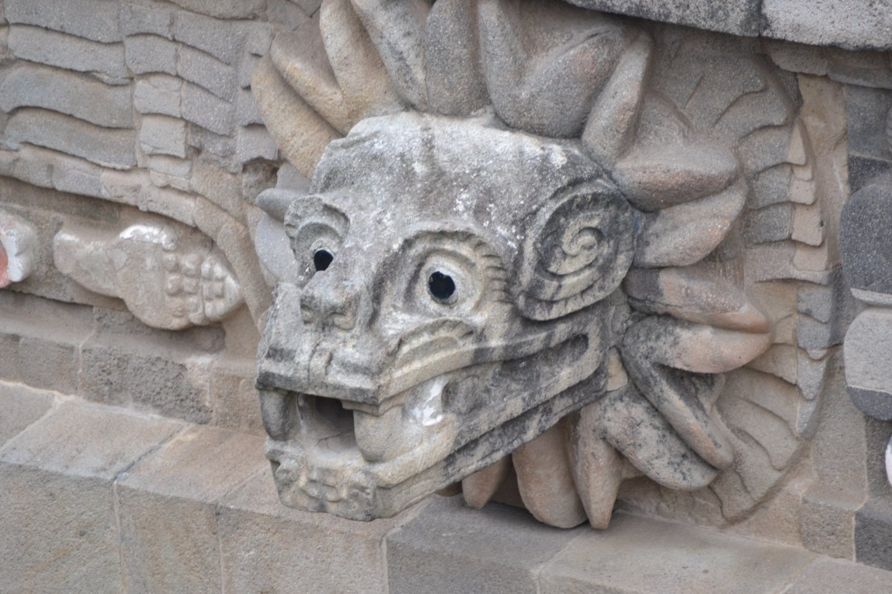
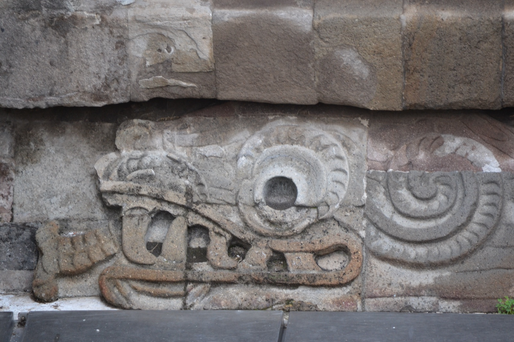
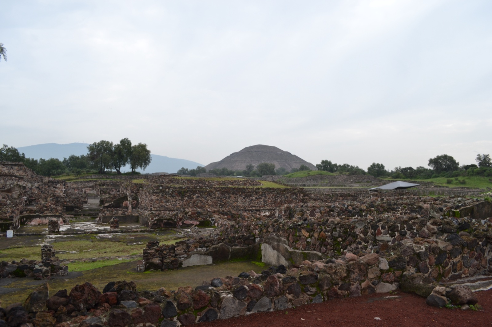
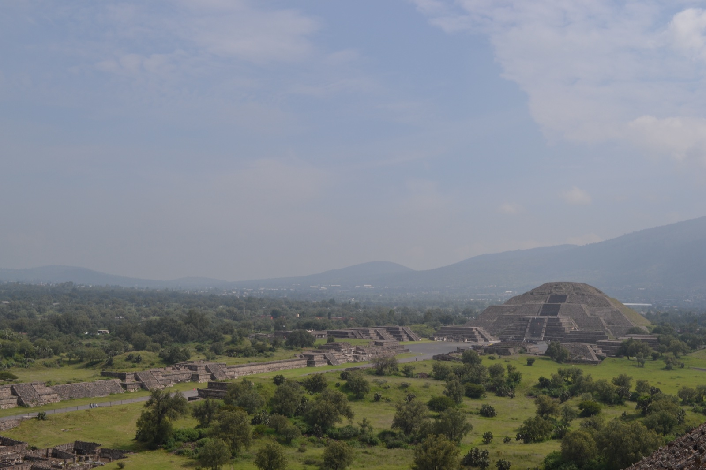
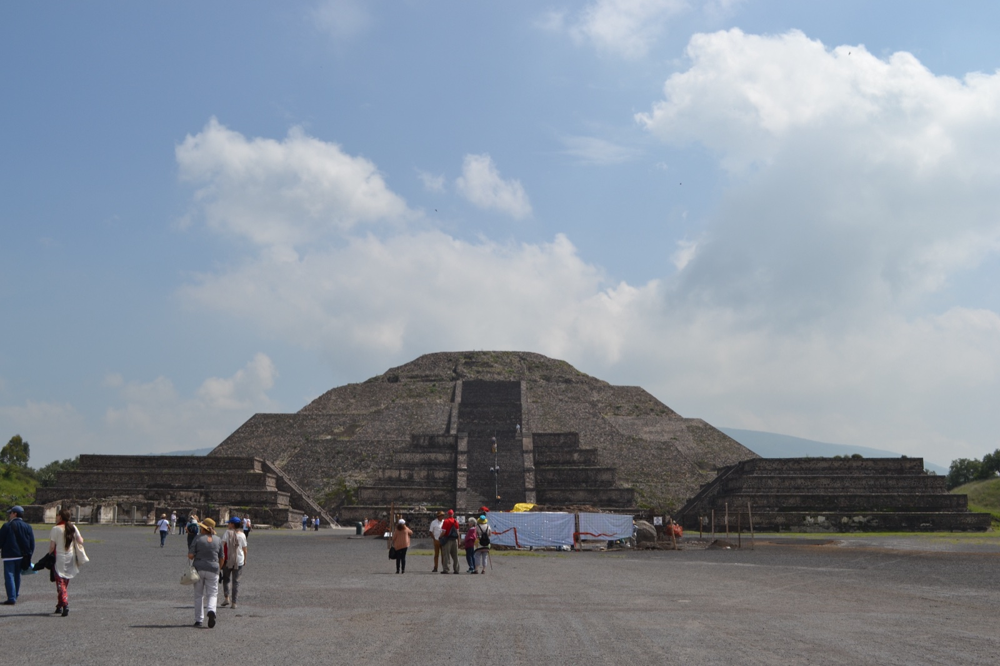
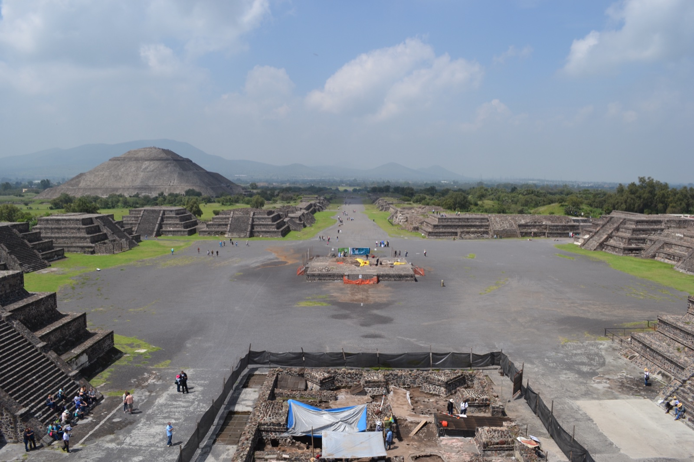

メキシコシティ滞在の合間、北東約50kmにあるテオティワカン遺跡（Teotihuacán）へ足を伸ばした。北バスターミナル（Autobuses del Norte）から「Pirámides」行きの路線バスに乗れば1時間ほどで現地に着く。紀元前2世紀から紀元後7世紀ごろまで栄えたメソアメリカ最大級の古代都市で、最盛期には人口10万を超え、当時世界でも屈指の規模を誇ったとされる。「テオティワカン」というナワトル語の名は、後から来たアステカ人が「神々が生まれた場所」と呼んだもので、この都市を実際に築いた人々が自分たちの街を何と呼んでいたかは、いまも分かっていない。
訪れた日は晴れ。標高2,300mの高原で日差しは強いものの、乾いた風が常に吹き抜けていて、後にカリブ海側のカンクンを訪れた時のような蒸し暑さはなかった。広い遺跡を一日かけて歩くのに向いた気候だった。
朝、バスターミナルへ向かう途中の露店で焼いてもらったトルティージャを朝食にした。値段の割にずっしりと大きく、それだけで腹が満たされる。これから始まる遺跡歩きへの良い助走になった。
死者の道——2kmの中央軸
広大な遺跡の中心を南北に貫くのが、長さ約2kmの死者の道（Calzada de los Muertos）。南端のシウダデラ（La Ciudadela、城塞の意）から北端の月のピラミッドまでまっすぐ伸びる中央通りで、両側には数十の神殿基壇が並ぶ。この呼び名は遺跡発見後にアステカ人がつけたもので、両脇の建造物を「墓」と勘違いしたところから来ているという。

死者の道沿いには露店が点々と並び、黒曜石のナイフ、お面、笛のようなものを売っている。ただ、いくつか覗くとどこも似た品揃えだと気づく。結局このときは何も買わなかった。
歩いていると、おとなしい1匹の犬がいつのまにか後ろをついてきていた。観光客に慣れているのか、距離をとりながらも一定の間合いで一緒に歩く。しばらく付き合ったあと、また別のグループの方へ離れていった。
羽毛の蛇神殿——シウダデラの中心
死者の道の南端、囲い壁に囲まれた巨大な広場シウダデラの中心に、羽毛の蛇神殿（Templo de Quetzalcóatl）が立つ。階段の脇には、口を大きく開いた羽毛の蛇（ケツァルコアトル）の頭部彫刻が連なり、テオティワカン彫刻の精緻さを物語る代表作になっている。


太陽のピラミッド——一辺220mの巨塊
死者の道を北上すると、東側に巨大な太陽のピラミッド（Pirámide del Sol）が現れる。底辺は一辺約220m、高さは約65m——古代ピラミッドとしてはエジプト・ギザのクフ王ピラミッド、メキシコ・チョルラの大ピラミッドに次ぐ世界級の規模だ。基底部からは生贄の痕跡や住居跡も発掘されており、単なる宗教施設ではなく、都市の中心装置として機能していたと考えられている。

正面に立つと、視界がほとんどピラミッドで埋まる。事前に写真や数字で「大きい」と知っていたつもりだったが、実物を目の前にすると想像していたよりさらに大きい——下から見上げると階段が空に向かって消えていくような錯覚さえあって、純粋に驚いた。

階段は急で、登っているときよりも下りるときのほうが足元の感覚に集中する。風が抜ける頂上に立つと、文字どおり都市全体を見下ろせる。テオティワカンで頂上まで登ったのは、この太陽のピラミッドだけだった。

頂上から見える月のピラミッドとセロ・ゴルド
頂上から死者の道の北端を望むと、向こうに月のピラミッド（Pirámide de la Luna）が姿を現す。太陽のピラミッドより一回り小さいが、背後にそびえる「セロ・ゴルド（Cerro Gordo、太った山）」と稜線がぴたりと重なる位置に置かれていて、設計者が地形と一体化した宗教景観を意図していたことが分かる。

月のピラミッド——死者の道の終点
最後にたどり着くのが、死者の道の北端を締めくくる月のピラミッド。基壇は何重にもテラス状に積み重なり、頂上付近からは祭祀儀礼で使われたとみられる遺骨や供物が出土している。手前の「月の広場」を取り囲むように小神殿が並び、太陽のピラミッドよりも象徴性が強く、儀礼空間としての密度が高い場所だ。

月のピラミッドは頂上までの登頂は時期によって制限されているが、第一基壇までは登れる。そこから南を振り返ると、死者の道がまっすぐ伸び、左奥に太陽のピラミッドが見える——テオティワカン全体の構図を一枚で実感できる、絶景のビューポイントだった。

2000年前にここで暮らした人々は、自分たちの都市を何と呼んでいたのか、なぜ大規模に放棄されたのか——テオティワカンには未だ解けない謎が多い。それでも、巨大な石造建築群が地形と一体化したまま残っているという事実だけで、「ここに確かに高度な文明があった」と直感させる場所だった。